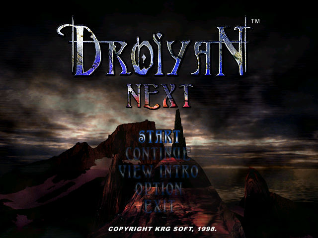
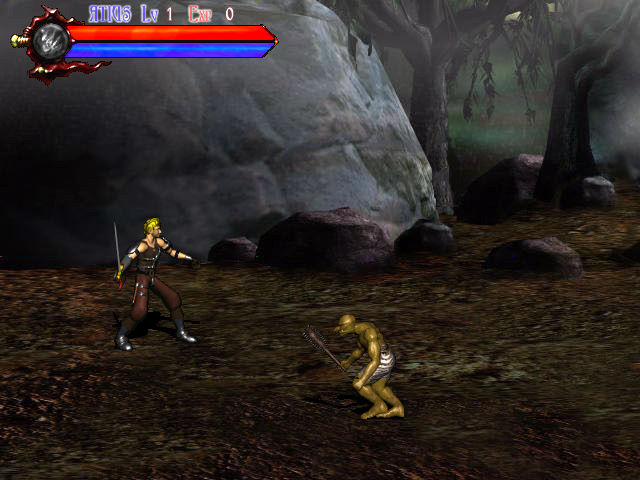

名稱：魔域爭霸 (Droiyan Next，中文版) 簡介：韓國KRG 1998年出品的動作遊戲，由旭力亞中文化並代理發行 [待補]。   保護：光碟 備註：VirtualBox無法正常執行，虛擬機請使用VMware，需要搭配DxWnd（可全螢幕），否則 速度會過快，一下子就陣亡了。但移動速度仍會過快，建議是使用PCem/DosBox+Win98。 備註：XP以上系統需設定Next.exe為Win9x相容。

